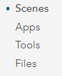

Remember: “How To: Introduction to Your Account”
Remember: “How To: Introduction to Your Account”
User Account Information
| Login page | https://www.arcgis.com/home/signin.html |
Sign In with username and password at the url
Your home page will be the User Group page Select Training Demo - Cadasta
Content will be found within the group
Content can be filtered in various ways
Sign Out of your account by selecting your User Account name in the top-left of your screen
 Remember: “How To: Introduction to Item Types”
Remember: “How To: Introduction to Item Types”
Navigate to Content
See Item Types in the Sidebar
Select item type Maps
Note: There are two sub-item types (1) Web Maps and (2) Map Files
Select item sub-type Web Maps
Note: There are no Map Files sub-type in the demo group and they are not covered in this
documentation.
Select Web Map Project Rose Field Collector Map
Click Open in Map Viewer
Navigate back to User Group Content and Select Web Map Project Rose Map - Access to Electricity
Click Open in Map Viewer
Navigate to Content
See Item Types in the Sidebar
Select item type Layers
Note: There are seven sub-item types (1) Feature Layers, (2) Tile Layers, (3) Map Imager Layers, (4) Imagery Layers, (5) Scene Layers, (6) Tables, and (7) Layer Files
Select item sub-type Feature Layers
Note: This documentation only covers Feature Layers.
Select Feature Layer Project Rose Field Collector PLP
Click Open in Map Viewer
Navigate back to User Group Content and Select Feature Layer Project Rose QA View
Click Open in Map Viewer
Navigate back to User Group Content and Select Feature Layer Project Rose Survey
Click Open in Map Viewer
Navigate to Content
See Item Types in the Sidebar
Select item type Apps
Note: There are three sub-item types (1) Web Apps, (2) Mobile Apps, and (3) Desktop
Apps
Select item sub-type Web Apps
Note: There are no Mobile App or Desktop App sub-types in the demo group and they are
not covered in this documentation.
Select Web App Project Rose Dashboard - Overview
Click View Dashboard
See Dashboard Details by selecting a collected record’s polygon
Navigate back to Content and Select Web App Project Rose Dashboard - QA Dashboard
Click View Dashboard
See Dashboard Details by selecting a collected record’s point
Navigate back to Content and Select Web App Project Rose Dashboard - Resource Metrics
Click View Dashboard
See Dashboard Details by selecting a collected record’s polygon(s)
Note: This dashboard has the possibility of one or more manual selections at one time.
Other Item Types not covered in this documentation are:
Scenes

Tools

Files

 Remember: “Introduction to Map Viewer”
Remember: “Introduction to Map Viewer”
- Navigate to the Map Viewer by clicking Map from the top bar
You can navigate to the Map Viewer from any Feature Layer item details page by clicking Open in Map Viewer
See the My Map page overview
The Home button allows you to navigate back to the main ArcGIS Online (AGOL) navigation options
Select Details to navigate to About, Content, and Legend sections.
Select Content to view layers (and Layer Options)
Select the Layer Options to access Show Legend, Show Table, Change Style, Filter, Perform Analysis, and More Options
Select the Legend to view layers in their symbolized form
Select Add to add layers to a map
There are multiple options for adding data layers to the map: Search for Layers, Browse Living Atlas Layers, Add Layer from Web, Add Layer from File, and Add Map Notes
Select Basemap to choose a basemap
Navigate to Zoom In, Zoom Out, and Home location by using the Navigation Console
Save your map by selecting Save
Share your map by selecting Share
Add a Basemap
Navigate to ArcGIS Online (AGOL) and click Map at the top of the page.
At the top of the Details pane, click the Content button.

- If necessary, click the Basemap button on the ribbon and choose a basemap.
- Save your map. On the ribbon, click the Save button and choose Save.
Add Layers
On the ribbon, click the Add button and choose Search for Layer

A default list of search results appears.
If necessary, click the dropdown arrow at the top of the pane and choose ____.
- Type in the search box. You are able to limit the search results.
- In the list of results, locate your search result.
- Click Add to add the layer to the map. You can add as many layers as you would like.
- At the top of the search pane, click the Back button. The layers are drawn, with their default symbols, in the order in which they were loaded into the map.
- Save your map. On the ribbon, click the Save button and choose Save.
Set Layer Properties
- In the Contents pane, point to your layer. Click the More Options button and choose Rename.
- In the Rename window, change the layer name and click OK.
- In the same way, rename each of your other layers.
- In the Contents pane, point to one of your layers. Click the More Options button and click Move up. The layer moves up one position.
- Move the layer to the top of the list.
- In the Contents pane, point to the your layer. Click the More Options button and choose Create Labels.
- Each entity is labeled.
- In the Label Features pane, you can change the label size.
- Open the properties for on of the layers and choose Transparency.
- Set the transparency percentage.
- Save your map. On the ribbon, click the Save button and choose Save.
Define the Map Legend
- At the top of the Contents pane, click the Legend button. Legend entries are created for all layers except the basemap.
- At the top of the Legend pane, click the Content button.
Open the properties for a layer and choose Hide in Legend.

Keep it hidden if you would like.
If you would like to show the layer, then choose Show in Legend.

View the legend again to see the effect, and then go back to the Contents pane.
Change a Symbol
In the Contents pane, point to a desired layer and click the Change Style button.

In the Change Style pane, the currently selected style is Location (Single symbol), which is indicated by the check mark.
In this style, all features in the layer are drawn with the same symbol. The Location style is appropriate when you want to see the features on the map but you're not interested in their particular characteristics, such as names or speed limits.
For a drawing style, under Location (Single symbol), click Options.
- Under Showing Location Only, click Symbols to change the symbol.
- On the color palette, choose a color that you think will look good and click OK. The new color is applied to the map. (If you don't like it, click Symbols again to open the color palette and choose a different color.)
- At the bottom of the Change Style pane, click OK and click Done.
- Save your map. On the ribbon, click the Save button and choose Save.
More Information
Esri Resource Links
Notes
- If you're in a new session, clicking Map will open a new map. Otherwise, it will open an existing map (the last map you were using). If an existing map opens, click New Map, and choose Create New Map.
- If you save the map, the map extent at the time of saving will become the extent used by the Default extent button. It can also be useful to add spatial bookmarks to navigate to particular map locations.
- Layer properties are always accessed in the same way: by pointing to the layer name and clicking an appropriate button or clicking the More Options button and choosing the property you want to change.
- The usual practice is to put points above lines, and lines above polygons. Points, lines, and polygons are all feature layers: they usually represent discrete geographic objects that have more or less precise locations and boundaries.
- Tile layers are images and cannot be manipulated in the same ways as feature layers. They typically represent large, continuous surfaces rather than discrete objects. Tile layers cannot be moved above feature layers in a map.
- When you start a new map, or open one of your own saved maps, it opens with the Contents pane showing. When anyone else opens a map created by you, however, it opens with the Legend pane showing.
- A layer's default display settings, including its style and pop-up configuration, are made by its owner. Once you add a layer to your own map, however, you're free to change those settings.